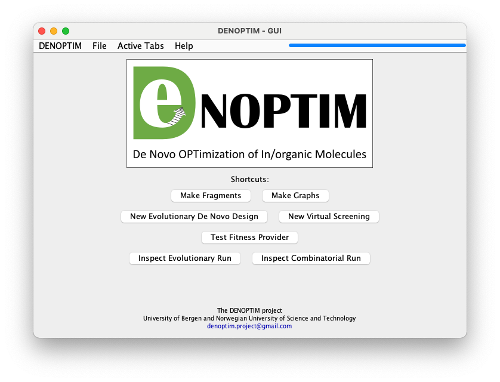
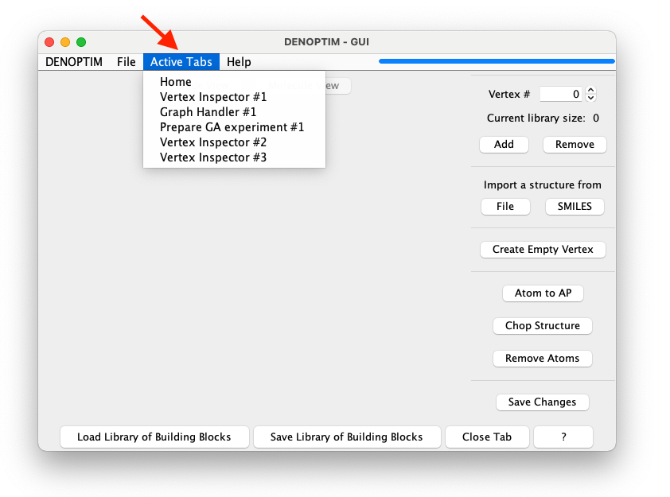

The Graphical User Interface (GUI)
DENOPTIM comes with a graphical user interface that allows to produce graphical depictions of complex objects, such as vertices and graphs, execute complex operations with few clicks (e.g., fragment molecules), and produce an overview of the outcome from combinatorial and evolutionary experiments.
Launch the GUI
The most convenient way to launch the GUI is running the denoptim command in the command line interface:
denoptim
Note the absence of any argument. This command launches the GUI and open its home tab (Figure 1). The shell where the command has been issued will be used for logging while the GUI is running.
denoptim command is nothing more than an alias to the command creating a JAVA virtual machine that runs the main method in the archive of DENOPTIM classes: java -jar $PATHTOJAR/denoptim-$VERSION-jar-with-dependencies.jar where $PATHTOJAR is the path where DENOPTIM has been installed and $VERSION is the version numbers (e.g., 4.0.0). These variables are set by Conda during the installation process.
Figure 1: The home tab of the GUI.
What’s in the GUI
The GUI has a menu bar with standard functionality:
the
DENOPTIMmenu gives access to general settings, software information, and a button for exiting the GUI,the
Filemenu, can be used to open existing files or create new ones.
Note that the home tab offers a few handy shortcuts to perform the same actions. For example, clicking on Make Fragments is the same as File -> New -> New Molecular Fragments.
Any operation such as opening a file, creating a new file, or preparing a new experiment will open a new panel (or tab) with a window’s design dedicated to the specific task. A newly opened tab is displayed in the main DENOPTIM window replacing the home tab. Notably, any tab opened in the GUI remain still accessible even after other tabs have been created and have replaced the original tabs in the main window. The main window is like a deck of cards with only one card on the top: it displays only one active tab at the time. To navigate the deck of cards, for example to reopen the home tab after having opened another tab, one can use the menu called Active Tabs. This menu contains the list of the independent tabs that are currently open in the GUI (Figure 2). Tabs remain open until they are closed by the user using the dedicated Close Tab button present in all kinds of tab but the home tab (i.e., the home tab cannot be closed).

Figure 2: The list of active tabs is available when clicking on the Active Tab menu (see red arrow). It allows to access any open tab. In this case the list contains a few active tabs. Note that tabs of the same kind are assigned an index to distinguish them from each other.
Open Files in the GUI
Besides the natural File -> Open sequence, one can open files in the GUI directly from the command line using a command like this:
denoptim file_to_open
This command will open the file_to_open using the most appropriate kind of tab. For instance, a Vertex Inspector tab will be used if the file_to_open is a file containing vertexes. Conversely, if file_to_open is a folder containing an evolutionary experiment (see the Note box below) the tab used to open the file will be a GA Run Inspector (Genetic Algorithm Run Inspector).
Note that multiple files can be opened with one command. The GUI will use an appropriate tab for each file, thus the list of active tabs can easily become long.
denoptim file_A file_B file_C ...